第 5 章
作業フィーチャ
この章では、作業フィーチャ（作業平面・作業軸・作業点・UCS）の作り方と使い方を説明します。読み終えると、面のない所にスケッチを置いたり、回転・パターンの軸や座標の基準を自分で用意したりできるようになります。
5.1 作業フィーチャとは
作業フィーチャは、形を持たない基準です。面やエッジだけでは足りないときに、基準を自分で作ります。4 種類あります。
作業平面: スケッチを置く面、ミラー・分割の面などに使います。
作業軸: 回転・円形状パターンの軸などに使います。
作業点: 平面・軸・UCS の基準、ロフトの先端などに使います。
UCS: 原点と X・Y・Z の向きを持つ座標系です。計測の基準、スケッチの原点などに使います。
作るコマンドは、リボンの［3D モデル］タブの［作業フィーチャ］パネルにあります。できた作業フィーチャは、ブラウザの履歴に［平面1］・［軸1］・［点1］・［UCS1］の名前で並び、［作業フィーチャ］フォルダにも集まります。

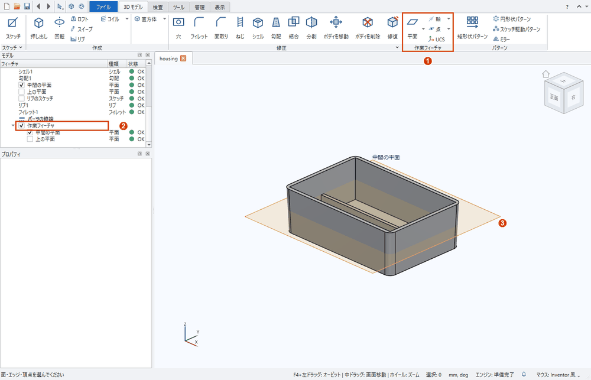

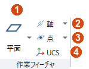
平面・軸・点は、▼のメニューから方法を選びます。方法の数は、作業平面が 12、作業軸が 7、作業点が 7 です。UCS は 1 つのボタンで、方法はフォームで選びます（3 つ）。

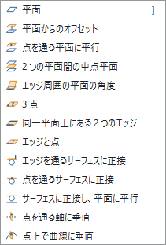

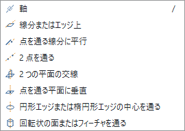

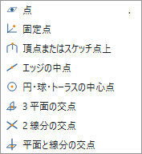
▼で選んだ方法は、ボタンの表に出ます。次からは、ボタンを押すだけで同じ方法で始まります。キーを押すと、［平面］は ] で［平面からのオフセット］、［軸］は / で［線分またはエッジ上］、［点］は . で［固定点］の方法で始まります。
作り方の流れ
どの作業フィーチャも、作り方は同じです。
リボンのコマンド（または▼の方法）をクリックします。プロパティ パネルにフォームが出ます。
選ぶものを、ビューかブラウザでクリックします。［平面］・［エッジまたは軸］・［点］などの欄に、順に入ります。欄の左の色の四角と同じ色で、選んだものがビューで光ります。
必要なら［オフセット］や［角度］に値を入れます。ビューに水色のプレビューが出ます。
［OK］（Enter）で確定します。
コマンドの前に、面・エッジ・点を選んでおいてもかまいません。選んだものが最初の欄に入ります。［OK］の右の［+］（［適用して新規作成］）は、確定して、同じ方法・同じ値でもう 1 つ作り始めます。選んだものは空になるので、次の面や点を選びます。
5.2 作業平面を作る
作業平面は、選んだものから位置と向きが決まります。方法は 12 あり、リボンの▼かフォームの［方法］欄で選びます。
| 方法 | 選ぶもの（選ぶ順） | 平面の位置 |
|---|---|---|
| ［平面からのオフセット］ | 平面（原点の平面・作業平面・平らな面） | 基準の平面から法線の向きに［オフセット］の距離 |
| ［点を通る平面に平行］ | 平面、点 | 点を通る |
| ［2 つの平面間の中点平面］ | 平面 2 つ | 平行なら真ん中。交わるなら 2 つの面の間の二等分面 |
| ［エッジ周囲の平面の角度］ | 平面、その平面に平行なエッジまたは軸 | エッジを通る |
| ［3 点］ | 点 3 つ | 3 点を通る |
| ［同一平面上にある 2 つのエッジ］ | エッジまたは軸 2 つ（同一平面上） | 2 つのエッジを含む |
| ［エッジと点］ | エッジまたは軸、点 | エッジと点を含む |
| ［エッジを通るサーフェスに正接］ | 円筒の面、円筒の軸に平行なエッジ | エッジを通り、円筒に接する |
| ［点を通るサーフェスに正接］ | 円筒の面、点 | 点を通り、円筒に接する |
| ［サーフェスに正接し、平面に平行］ | 平面（円筒の軸に平行）、円筒の面 | 円筒に接する |
| ［点を通る軸に垂直］ | エッジまたは軸、点 | 点を通る |
| ［点上で曲線に垂直］ | 曲線（エッジかスケッチの曲線）、曲線の上の点（省略できます） | 曲線の上の点。点を選ばないときは［曲線上の位置］（0 が始点、1 が終点） |
平面には向きがあります。法線（平面に垂直な向き）と、X 方向（この平面にスケッチを置いたときの横方向）です。
| 方法 | 法線 | X 方向 |
|---|---|---|
| 平面からのオフセット、点を通る平面に平行、サーフェスに正接し、平面に平行 | 基準の平面と同じ | 基準の平面と同じ |
| 2 つの平面間の中点平面 | 1 つ目の平面の側 | 1 つ目の平面の X 方向 |
| エッジ周囲の平面の角度 | 基準の法線を、エッジのまわりに［角度］（既定 90°）だけ右ねじで回した向き | エッジの向き |
| 3 点 | 1→2→3 の順に反時計回りに見える側 | 1 点目から 2 点目へ |
| 同一平面上にある 2 つのエッジ | 1 本目の向きから 2 本目の向きへ右ねじで回して進む向き | 1 本目のエッジの向き |
| エッジと点 | エッジの向きから点の側へ右ねじで回して進む向き | エッジの向き |
| エッジを通るサーフェスに正接 | 接する所の外向き | エッジの向き |
| 点を通るサーフェスに正接 | 接する所の外向き | 円筒の軸の向き |
| 点を通る軸に垂直 | 軸の向き | 軸から点へ向かう向き |
| 点上で曲線に垂直 | 曲線の接線の向き（選んだ時の向き） | 曲線の曲率中心の向き（直線は最も直交する全体軸） |
［方向を反転］にチェックを付けると、［平面からのオフセット］は反対側へ平面を移します（法線は基準のままです）。接平面の 3 つの方法は、反対側で接する平面になります。ほかの方法は、法線が逆向きになります（位置と形は変わりません）。
オフセット平面を作る
面や平面から一定の距離だけ離れた平面を作ります。最もよく使う方法です。
リボンの［3D モデル］タブ → ［作業フィーチャ］パネル → ［作業平面］の▼ → ［平面］をクリックします（パネルの大きな［平面］ボタンを押してもかまいません）。
ブラウザの［原点］を開き、［XY 平面（上面）］をクリックします。［平面］の欄に入ります。ビューの平らな面をクリックしてもかまいません。
［オフセット］に
15と入力します。ビューにプレビューと、距離を変える矢印が出ます。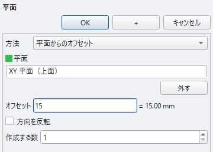
図 5-6 オフセット平面のフォーム。［方法］は［平面からのオフセット］です。一番下の［作成する数］は、複数枚を作るときに使います。 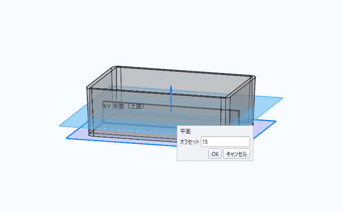
図 5-7 濃い青が選んだ平面、薄い青がプレビューです。矢印をドラッグしても距離を変えられます。図は housing.mcad です。 ［OK］で確定します。ブラウザに［平面1］ができます。


［オフセット］には式も入れられます（第 10 章）。
エッジのまわりに傾けた平面を作る
リボンの［3D モデル］タブ → ［作業フィーチャ］パネル → ［作業平面］の▼ → ［エッジ周囲の平面の角度］をクリックします。
ブラウザの［XY 平面（上面）］をクリックします。［平面］の欄に入ります。
ビューで、その平面に平行なエッジ（箱の底の手前のエッジ）をクリックします。［エッジまたは軸］の欄に入ります。
［角度］に
30と入力します。エッジのまわりに 30° 傾いたプレビューが出ます。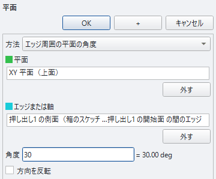
図 5-8 エッジ周囲の平面の角度のフォーム。 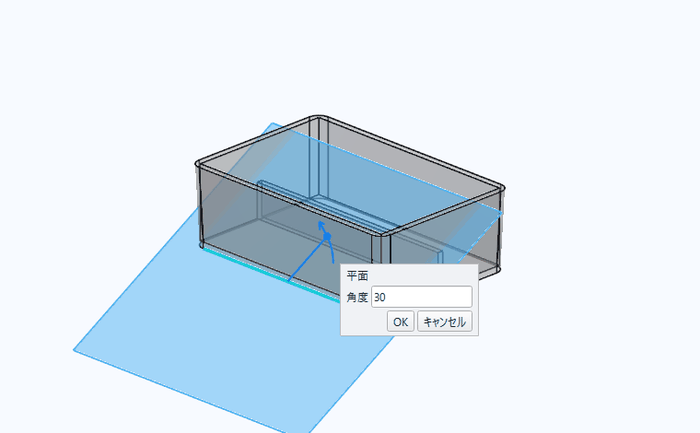
図 5-9 水色の線がエッジです。平面がエッジのまわりに 30° 傾きます。円弧のハンドルをドラッグしても角度を変えられます。 ［OK］で確定します。


3 点を通る平面を作る
リボンの［3D モデル］タブ → ［作業フィーチャ］パネル → ［作業平面］の▼ → ［3 点］をクリックします。
ビューで頂点を順に 3 つクリックします。［点］・［2 点目］・［3 点目］の欄に入ります。作業点・UCS の原点・スケッチの点も選べます。
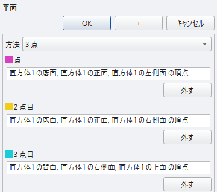
図 5-10 3 点のフォーム。3 つの欄が順に埋まります。 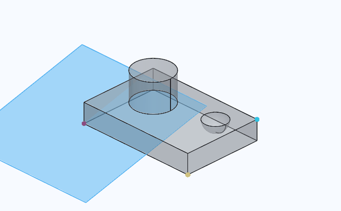
図 5-11 選んだ 3 つの頂点（色の点）を通る平面のプレビューです。図は primitives.mcad です。 ［OK］で確定します。


点の順を入れ替えると、法線が逆向きになります。3 点が 1 本の直線の上にあると、「3 点が 1 本の直線の上にあります」と出て作れません。
円筒に接する平面を作る
接平面の 3 つの方法は、円筒の面に接する平面を作ります。例として、［サーフェスに正接し、平面に平行］を使います。
リボンの［3D モデル］タブ → ［作業フィーチャ］パネル → ［作業平面］の▼ → ［サーフェスに正接し、平面に平行］をクリックします。
ブラウザの［YZ 平面（右側面）］をクリックします。［平面］の欄に入ります。
ビューで円筒の面（フランジのハブの側面）をクリックします。［サーフェス］の欄に入ります。
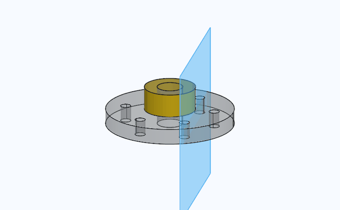
図 5-12 YZ 平面に平行で、ハブの円筒に接する平面のプレビューです。図は flange.mcad です。 ［OK］で確定します。

円筒に接する平面は、ふつう 2 つあります。最初に出るのは、選んだ時の円筒の軸のまわりに右ねじの側の 1 つです。［方向を反転］で、もう 1 つ（反対側）に替わります。
方法を変える
作る途中でも、作った後の編集でも、［方法］欄で方法を変えられます。フォームの欄と、選ぶものが変わります。使わなくなった欄に選んでいたものは、確定すると捨てられます。次に選ぶ欄は、自動で選択待ちになります。
5.3 作業軸を作る
作業軸は、直線の位置と向きを作ります。方法は 7 つです。
| 方法 | 選ぶもの | 軸の位置 | 向き |
|---|---|---|---|
| ［線分またはエッジ上］ | 直線のエッジ・スケッチの線・原点の軸 | エッジの上 | 選んだ時のエッジの向き |
| ［点を通る線分に平行］ | エッジまたは軸、点 | 点を通る | エッジの向き |
| ［2 点を通る］ | 点 2 つ | 1 点目を通る | 1 点目から 2 点目へ |
| ［2 つの平面の交線］ | 平面 2 つ | 2 つの平面の交線 | 1 つ目の法線 × 2 つ目の法線の向き |
| ［点を通る平面に垂直］ | 平面、点 | 点を通る | 平面の法線 |
| ［円形エッジまたは楕円形エッジの中心を通る］ | 円・円弧・楕円のエッジ、スケッチの円・円弧 | 円の中心 | 円の軸（スケッチの円・円弧はスケッチの法線） |
| ［回転状の面またはフィーチャを通る］ | 円筒・円錐・トーラスの面 | 面の回転軸 | 選んだ時の軸の向き |
［方向を反転］にチェックを付けると、軸の向きが逆になります。回転の軸や円形状パターンの軸に使うときは、回る向きが逆になります。
円筒の軸を作る
円筒（穴・ハブ・軸）の中心線は、［回転状の面またはフィーチャを通る］で作れます。
リボンの［3D モデル］タブ → ［作業フィーチャ］パネル → ［作業軸］の▼ → ［回転状の面またはフィーチャを通る］をクリックします。
ビューで円筒の面（ハブの側面）をクリックします。［回転状の面］の欄に入ります。
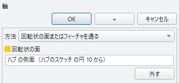
図 5-13 作業軸のフォーム。［方法］に応じて、選ぶ欄が変わります。 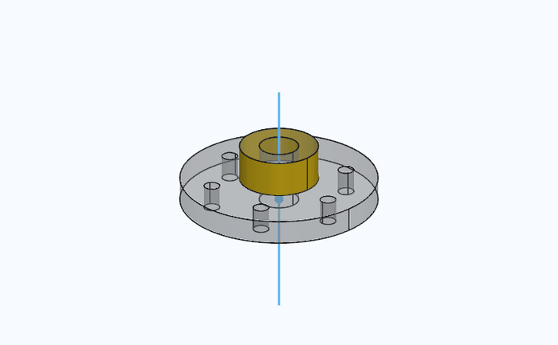
図 5-14 ハブの中心を通る作業軸（青い線）。選んだ円筒の面が黄色で光ります。図は flange.mcad です。 ［OK］で確定します。ブラウザに［軸1］ができます。


作業軸は、ビューに線で出ます。線をクリックして選べます。カーソルを合わせると、ステータスバーに「軸: 軸1」のように名前が出ます。
5.4 作業点を作る
作業点は、空間の 1 点を作ります。方法は 7 つです。
| 方法 | 選ぶもの | 点の位置 |
|---|---|---|
| ［固定点］ | なし（［X］・［Y］・［Z］に座標を入力。［座標系］に UCS か平面を選ぶと、その座標系の座標） | 入力した座標 |
| ［頂点またはスケッチ点上］ | 頂点・スケッチの点・作業点・UCS の原点 | その点 |
| ［エッジの中点］ | エッジ、スケッチの曲線 | エッジの長さの中点 |
| ［円・球・トーラスの中心点］ | 円・円弧・楕円のエッジ、スケッチの円・円弧、球・トーラスの面 | 中心 |
| ［3 平面の交点］ | 平面 3 つ | 3 つの平面が交わる点 |
| ［2 線分の交点］ | エッジまたは軸 2 つ | 2 本が交わる点（交わらないと作れません） |
| ［平面と線分の交点］ | 平面、エッジまたは軸 | 平面と線が交わる点 |
円の中心に作業点を作る
リボンの［3D モデル］タブ → ［作業フィーチャ］パネル → ［作業点］の▼ → ［円・球・トーラスの中心点］をクリックします。
ビューで円のエッジ（円柱の上の円）をクリックします。［円・球・トーラス］の欄に入ります。
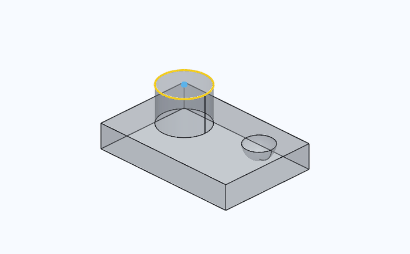
図 5-15 円柱の上の円のエッジ（黄色）と、その中心にできる作業点（小さな青い点）です。図は primitives.mcad です。 ［OK］で確定します。ブラウザに［点1］ができます。

［固定点］では、ビューの X・Y・Z の矢印（ハンドル）をドラッグして、位置を動かせます。
5.5 UCS を作る
UCS は、原点と X・Y・Z の向きを持つ座標系です。右手系（Z = X × Y）です。［UCS］のフォームの［方法］で、置き方を 3 つから選びます。
| 方法 | 選ぶもの・入力 | 向き |
|---|---|---|
| ［オフセットと回転］ | ［基準の座標系］（空ならワールド）、［X］・［Y］・［Z］の移動、［X 軸まわりの回転］・［Y 軸まわりの回転］・［Z 軸まわりの回転］ | 基準の座標系の方向に移動し、X → Y → Z の順に、回した後の軸のまわりに右ねじで回す |
| ［原点と 2 方向］ | ［原点］（点）、［X 方向］（エッジまたは軸）、［Y の向き］（省略できます） | X は 1 つ目の向き。Y は 2 つ目の向きの X に垂直な成分（省略すると、X に最も直交する全体軸）。［X を反転］・［Y を反転］で逆向き |
| ［3 点］ | ［原点］、［X 軸の点］、［XY 平面の点］（点 3 つ） | X は原点から X 軸の点へ。Y は XY 平面の点の側 |
3 点で UCS を作る
リボンの［3D モデル］タブ → ［作業フィーチャ］パネル → ［UCS］をクリックします。
［方法］を［3 点］にします。
ビューで頂点を 3 つ、原点・X 軸の点・XY 平面の点の順にクリックします。
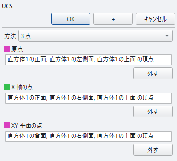
図 5-16 3 点の UCS のフォーム。 ［OK］で確定します。ブラウザに［UCS1］ができます。
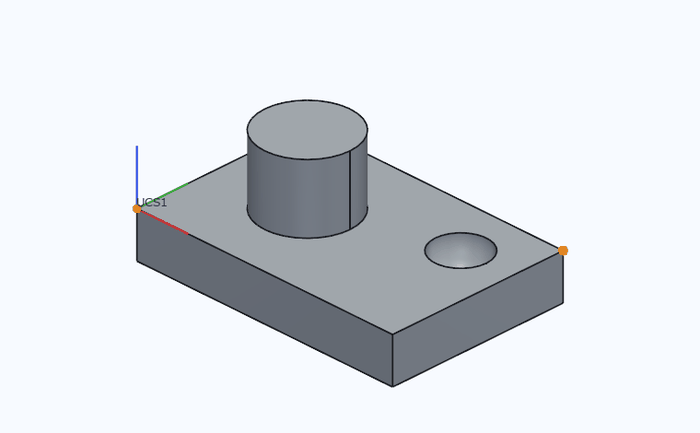
図 5-17 原点に UCS1 ができました。X・Y・Z が 3 本の線（赤・緑・青）で出て、名前が付きます。図は primitives.mcad です。


UCS は、スケッチの置き場所、作業点の座標の基準、計測の座標系に使えます（作業フィーチャを使う機能）。
5.6 オフセット平面を複数枚作る
同じ間隔のオフセット平面は、1 回の操作でまとめて作れます。
リボンの［3D モデル］タブ → ［作業フィーチャ］パネル → ［作業平面］の▼ → ［平面からのオフセット］をクリックし、基準の平面（［XY 平面（上面）］）を選びます。
［オフセット］に
10、［作成する数］に3と入力します。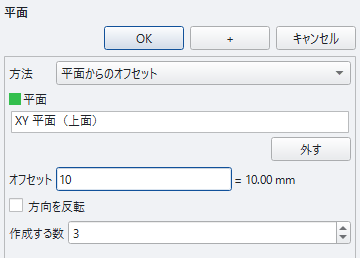
図 5-18 ［作成する数］は、フォームの一番下にあります。［方法］が［平面からのオフセット］のときだけ出ます。 ［OK］で確定します。3 枚の平面ができます。
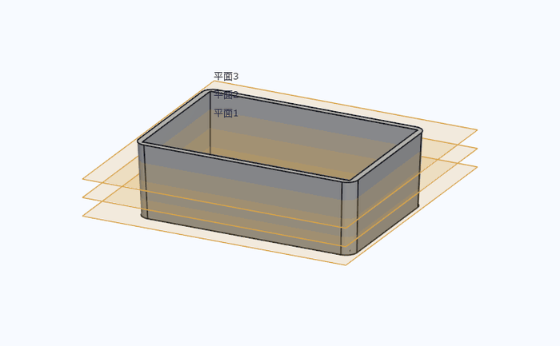
図 5-19 基準から 10・20・30 mm の位置に［平面1］〜［平面3］ができました。


1 枚目は基準の平面から、2 枚目からは前の平面から、同じオフセットで並びます。［平面1］の［オフセット］をあとで変えると、［平面2］・［平面3］が付いてきます。［元に戻す］は 1 回で 3 枚とも消えます。
5.7 作業フィーチャを管理する
表示と非表示
作業フィーチャは、作ると表示されます。表示は 3 つの方法で切り替えます。
1 つずつ: ブラウザの行の左のチェックを付け外しします。
まとめて: ［作業フィーチャ］フォルダのチェックで、平面・軸・点・UCS を全部、出し入れします。
種類ごと: リボンの［表示］タブ →［表示設定］パネル →［オブジェクトの表示設定］▼で切り替えます。項目は［ユーザ作業平面］・［ユーザ作業軸］・［ユーザ作業点］・［ユーザ座標系（UCS）］・［すべての作業フィーチャ］です。

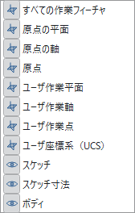

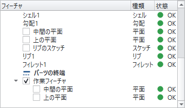
種類ごとの設定は、1 つずつの設定より強く働きます。隠した作業フィーチャも、ブラウザでカーソルを合わせたり選んだりしている間は、一時的に出ます。ビューで選んでから［非表示］・［表示］でも切り替えられます（第 2 章）。
名前の変更
ブラウザの行を選んで F2 を押すと、［新しい名前］を入力するダイアログが出ます。名前を入れて ［OK］ を押します。
編集
ブラウザの行をダブルクリックすると、作ったときのフォームが開きます。［方法］・選んだもの・値を変えて、［OK］で確定します。選んだものは、欄をクリックして選び直します（［外す］で空にもできます）。

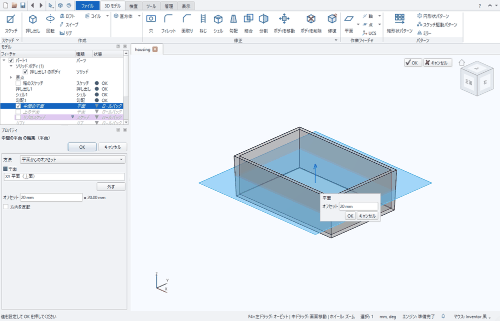
編集中は、ビューのハンドルをドラッグして値を変えられます。作業平面は［オフセット］の矢印と［角度］の円弧です。作業点（固定点）は X・Y・Z の矢印、UCS（オフセットと回転）は移動と回転の X・Y・Z です。
削除
ブラウザの行を選び、Del（［削除］）を押します。ほかのフィーチャが使っていなければ、そのまま消えます。使っているフィーチャがあるときは、扱いを尋ねるダイアログが出ます。

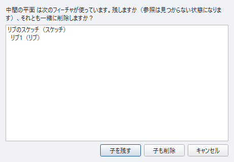
削除は、［元に戻す］で戻せます。
参照と使用先
ブラウザの行にカーソルを合わせると、ツールチップが出ます。名前と状態のほか、「参照: …」（使っているもの）と「使用先: …」（この作業フィーチャを使っているフィーチャ）の行があります。削除の前に確かめます。
5.8 向きの決まり方
作業平面の法線・X 方向、作業軸の向き、UCS の X・Y・Z は、使う機能に効きます。スケッチの横方向、回転の向き、パターンの向き、押し出しの既定の側などです。
選んだ時の向きを保ちます。エッジや円筒の向きは、選んだ時の向きの側に決まります。関係のない上流の変更では、反転しません。
原点は、直線のエッジ・円筒・円錐の軸では、全体の原点から軸へ下ろした垂線の足です。円・楕円・トーラスでは中心です。
反転は、［方向を反転］（UCS は［X を反転］・［Y を反転］）です。向きが逆なときは、これで直します。
編集で上流が変わり、エッジの向きが選んだ時と直交すると、「向きが決まりません: 選んだ時の向きと直交しています。参照を選び直してください」と出ます。参照を選び直します。
以前のドキュメントを開き直したとき
向きの基準を改めたため、以前のバージョンで作ったドキュメントを開くと、次の値が変わることがあります。形は変わりません。直すときは［方向を反転］を使います。
点上で曲線に垂直な平面（ボディのエッジ）: エッジの向きが逆だったときは、位置が反対の端から数えられ、法線が逆になります。
2 つのエッジ・エッジと点・エッジを通る接平面、エッジの作業軸: 原点が垂線の足へ動きます。平面・軸は同じですが、その座標系の作業点・UCS・計測の値が動きます。
交わる 2 つの平面の中点平面: X 方向と原点が変わります（その平面のスケッチは面内で回ります）。上下に重なる（ほぼ平行な）2 つの面は、垂直な平面から間の平面に変わります。
点・エッジを通る円筒の接平面: 円筒の軸が選んだ時と逆（上向きに押し出した円柱など）だと、既定の接平面が反対側になり、X 方向も逆です。
スケッチの向き: UCS に置いたスケッチは、UCS の X 軸の向きです。スケッチの円・円弧の中心の作業軸は、スケッチの法線の向きです。
5.9 作業フィーチャを使う機能
作業フィーチャは、次の欄に選べます。ビューでクリックするか、ブラウザの行を選びます。詳しい使い方は、各章にあります。
| 機能 | 欄 | 選べるもの | 章 |
|---|---|---|---|
| スケッチ | ［平面］ | 作業平面、UCS（XY 平面として） | 第 4 章 |
| 回転 | ［軸］ | 作業軸 | 第 6 章 |
| 押し出し | ［終点］ | 作業平面、作業点 | |
| 勾配 | ［固定平面］ | 作業平面 | |
| 矩形状パターン | ［方向 1］・［方向 2］ | 作業軸、作業平面 | 第 7 章 |
| 円形状パターン | ［回転軸］ | 作業軸 | |
| ミラー | ［ミラー平面］ | 作業平面 | |
| ロフト | ［始点］・［終点］ | 作業点 | |
| 分割 | ［分割ツール］ | 作業平面 | 第 8 章 |
| ボディを移動 | ［回転軸］ | 作業軸 | |
| 計測 | ［座標系］ | UCS | 第 12 章 |
作業平面・UCS にスケッチを置く
ブラウザで作業平面か UCS を選んでから、リボンの［3D モデル］タブ → ［スケッチ］パネル → ［スケッチ］をクリックします。その平面にスケッチが始まり、ビューが正対します。作業平面に置いたスケッチは、原点が全体の原点の射影、X 方向が作業平面の X 方向です。UCS に置くと、原点も X 方向も UCS のものになるので、UCS の座標でスケッチを描けます。
作業平面の行を右クリックして［新しいスケッチ］を選んでも、その平面にスケッチが始まります（ビューの作業平面を右クリックしても同じです。何も選んでいなくても、右クリックした作業平面が選ばれてメニューが出ます。UCS・作業軸・作業点では出ません）。

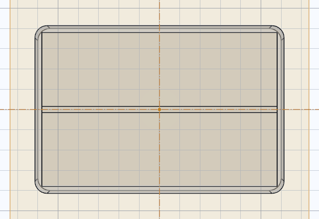
作業軸をパターンの軸に使う
リボンの［3D モデル］タブ → ［パターン］パネル → ［円形状パターン］の［回転軸］の欄をクリックし、ブラウザかビューで作業軸を選びます。回転の［軸］の欄も同じです。

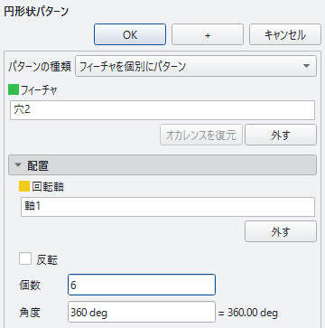
計測の座標系に UCS を使う
リボンの［検査］タブ →［計測］パネル →［計測］で計測する頂点などを選び、パネルの［座標系］を UCS にします。位置・中心・ΔX/ΔY/ΔZ が、UCS の座標で出ます。距離と角度は変わりません。

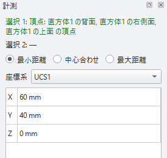
5.10 できないこと・限界
接平面は円筒の面だけです。円錐・球・トーラスの接平面や、平らでない面に垂直な作業軸は作れません。
［円・球・トーラスの中心点］は、円・円弧・楕円のエッジと、球・トーラスの面に使えます。それ以外のエッジのループの中心は作れません。
UCS の XY・XZ・YZ 平面と X・Y・Z 軸は、個別に選べません。UCS を選ぶと、平面の欄では XY 平面、軸の欄では Z 軸、点の欄では原点として使われます。
作業平面の大きさは、モデルの大きさに合わせて自動で決まり、変えられません。
作業軸・作業点には、名前のラベルは出ません（作業平面と UCS には出ます）。
選んだ作業フィーチャは、欄の色ではビューに強調されません（選択とカーソルを合わせたときの強調だけです）。
作業点・UCS のハンドルは、X・Y・Z を 1 つずつ動かす矢印と円弧です。3 軸をまとめて動かすハンドルはありません。
計測の［座標系］に選べるのは UCS だけです（作業平面・作業点は選べません）。
作れないときは、パネルの上に理由が赤く出ます。主なものを挙げます。
| 表示 | 直し方 |
|---|---|
| エッジまたは軸は平面に平行にしてください | 角度の方法で、選んだ平面に平行なエッジを選びます |
| 3 点が 1 本の直線の上にあります | 一直線上にない 3 点を選びます |
| 2 つの平面が平行です | 交わる 2 つの平面を選びます |
| 2 本の線分が交わりません | 交わる 2 本のエッジまたは軸を選びます |
| 点が円筒の内側にあります | 円筒の外側の点を選びます |